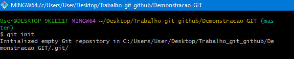
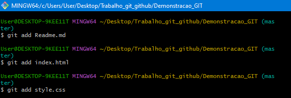
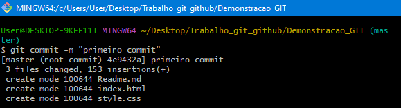
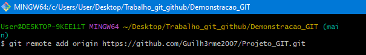
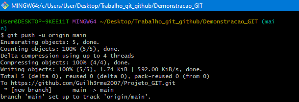
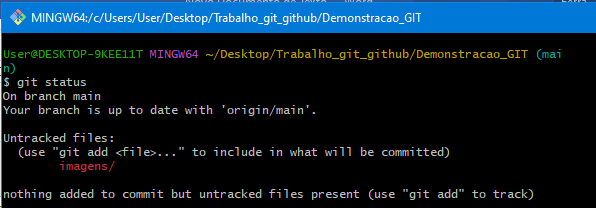
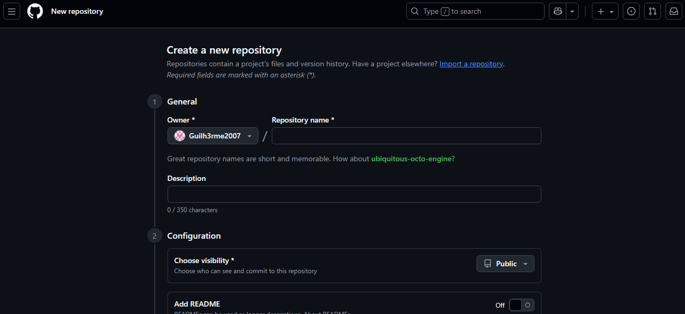
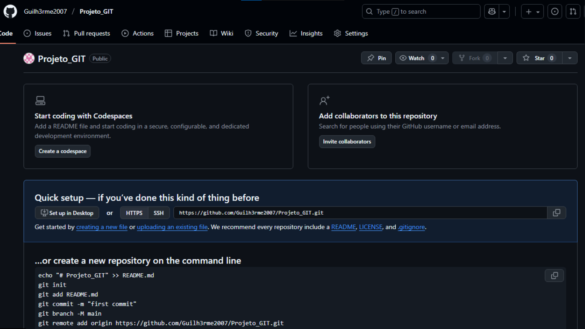
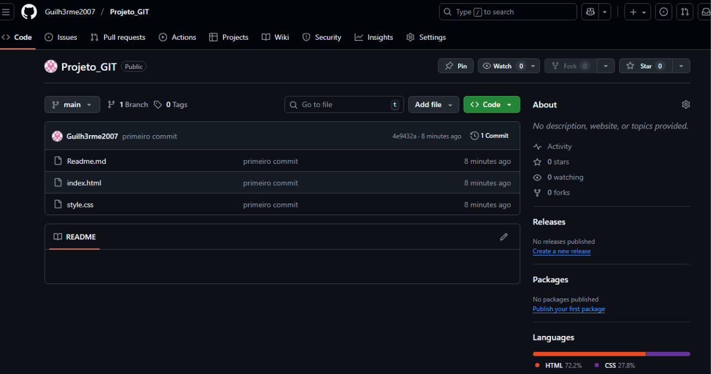

| Comandos | Função |
|---|---|
git config --global user.name "Seu Nome" |
Define o nome que aparecerá no histórico de commits |
git config --global user.email "seu.emailexemplo@gmail.com" |
Define o email que aparecerá no histórico de commits |
git init |
Inicia um novo repositório Git no diretório atual |
git clone URL_do_repositório |
Cria uma cópia local(um "clone") de um repositório que ja existe |
git status |
Mostrao estado atual do repositório |
git add nome_do_arquivo |
Adiciona um arquivo específico ao "stage" (área de preparação) para ser incluído ao commit |
git add . |
Adiciona todas as alterações no diretório ao "stage" |
git commit -m "Sua mensagem" |
Salva as alterações do "stage" no repositório com uma mensagem descritiva |
git pull |
Baixa as alterações do repositório e mescla com a branch local |
git push |
Envia seus commits locais para o repositório remoto |
git push origin nome_da_sua_branch |
Forma explícita de enviar seus commits para uma branch específica no remoto |
- Iniciação de um repositório Git

- Adiciona arquivos ao stage

- Confirma as alterações

- Renomeia a branch atual
- Adiciona um repositório remoto

- Envia alterações para o repositório remoto

- Verifica o status do repositório

- Cria um novo repositório no Github

- Repositório remoto

- Conecta o repositório local ao Github
